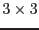

XMM-Newton Science Analysis System
epevents (epevents-6.50.1) [xmmsas_20170112_1337-16.0.0]
Details about the pattern recognition
epevents
performs a pattern analysis to identify and
characterize split events: the
charge distribution in split events is analysed and the detected patterns
are described by four parameters:
- PAT_TYP:
PATTERN TYPE, the absolute value identifies the pattern,
i.e. the number of pixels which belong to the pattern:
single (1), double (2), triple (3), quadruple (4), ...
negative if amplitude of the corresponding pixel should be ignored (e.g. if
not main pixel or or also main pixel if it is at an edge).
NULL value is set for trailing events
which are excluded from the pattern analysis and MIPs.
- PAT_IND:
PATTERN INDEX, running number of pattern within a frame,
starting with 1. All pixels within a pattern share the same (absolute value
of) PAT_IND so this parameter is needed to identify split partners.
For the pixel of a pattern with the highest PHA this value is positive; for
the others it is negative. Unresolved patterns (e.g. those with
PAT_TYP
 ) contain only negative values.
Singles are not regarded as patterns and thus have PAT_IND=0.
) contain only negative values.
Singles are not regarded as patterns and thus have PAT_IND=0.
- PAT_ORI:
PATTERN ORIENTATION, zero for singles and unresolved
patterns; otherwise for valid patterns a three-digit code, with the last digit
specifying the orientation of the pattern and the first two the position of
the pixel in the pattern; the pattern is inserted into a  pixel array
with the main pixel (having the highest PHA value) at the center (2,2):
- first digit: x position of the pixel on the pattern
- second digit: y position of the pixel on the pattern
- third digit: orientation of the pattern:
- for doubles: neighbouring pixel (i.e. pixel with smaller PHA than the main
pixel) to the right (1), bottom (2), left (3),
top (4) with respect to the local maximum in the pattern
- for triples: L-shaped distribution with the line of symmetry towards:
lower right (1), lower left (2), upper left (3), upper right (4)
- for quadruples: square-shaped distribution, offset towards:
lower right (1), lower left (2), upper left (3), upper right (4)
All coordinates refer to a chip-oriented coordinate system (ix,iy) with the
CAMEX at bottom, seen from the X-ray source, i.e. the x coordinate is
running towards the right and the y coordinate upwards, with the CAMEX at
y = 0.
- PAT_SEQ:
PATTERN SEQUENCE, distance (in pixels) to neighbouring
event in the same frame and column (along the readout direction) towards
the CAMEX. PAT_SEQ = 0 indicates the first pixel read in a column.
This information is used to determine the CTI as a function of the
frame history - the charge shift during the readout of earlier events
effects the CTI of the actual event.
XMM-Newton SOC/SSC -- 2017-01-12